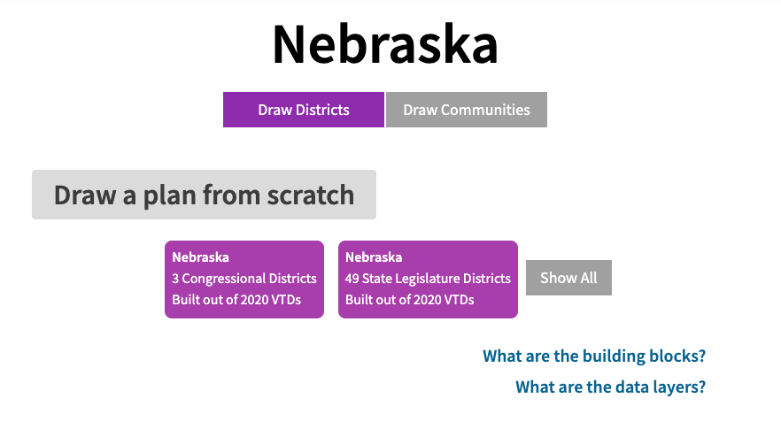

<!DOCTYPE html>
<html>
<head>
  <meta name="viewport" content="width=device-width, initial-scale=1.0">
  <link rel="stylesheet" href="https://fonts.googleapis.com/css?family=Inter:300,400,500,600,700" />
  <link rel="stylesheet" href="https://fonts.googleapis.com/css?family=PT+Mono:400" />
  <link rel="stylesheet" href="https://cdnjs.cloudflare.com/ajax/libs/font-awesome/4.7.0/css/font-awesome.min.css">
  <link rel="stylesheet" href="portfolio.css">
  <link rel="stylesheet" href="subpage.css">
  <link rel="icon" type="image/png" href="src/favicon2.png"/>
  <title>CS 347 Class Commentaries Generator</title>
</head>
<body>
  <div id="page">
    <!-- <div id="container">
      <span class="p return">← <a href="index.html">Return</a></span>
      <h1>CS 347 Class Commentaries Generator</h1>
      <p class="course-info">Research Prototype • LLM Clustering • Education Tool</p>
      <p>
        <span class="tag-p school">#Research</span>
        <span class="tag-p code">#Python</span>
        <span class="tag-p code">#LLM Clustering</span>
      </p>

      <hr class="div">

      <div class="split">
        <p class="split-name sub">Project Summary</p>
        <p class="split-right">As a part of Diana Davis' Districting Data REU, I spearheaded the creation of the first publicly available elections geospatial dataset for the state of Nebraska to support mathematical gerrymandering research. I led a team of undergraduates to gather, process, and analyze data using <strong>Python</strong>, <strong>GeoPandas</strong>, and <strong>GIS tools</strong>, and manually coordinated with district offices to obtain key information.</p>
      </div>

      <div class="split">
        <p class="split-name sub">Responsibilities</p>
        <div class="split-right">
          <p class="detail-line">▶ Led a team of undergraduates to collate and process precinct-level election and demographic data</p>
          <p class="detail-line">▶ Integrated data from Nebraska state and county sources, the <strong>Census API</strong>, and the <strong>US Census Bureau</strong></p>
          <p class="detail-line">▶ Implemented data processing workflows using <strong>Python</strong>, <strong>NumPy</strong>, and <strong>GeoPandas</strong> to merge and align election results, demographic data, and geospatial boundaries</p>
          <p class="detail-line">▶ Aggregated and disaggregated demographic data across different geographic levels using MGGG's proration software</p>
        </div>
      </div>

      <div class="split">
        <p class="split-name sub">Outcome</p>
        <div class="split-right">
          <p class="detail-line">▶ Presented findings of gerrymandering research at the <strong>2020 Joint Mathematics Meetings</strong>, earning an Honorable Mention at the MAA Undergraduate Poster Session</p>
          <p class="detail-line">▶ The dataset has since become a critical resource for geospatial research on electoral districting and can be publicly available at <span class="p"><a href="https://github.com/mggg-states/NE-shapefiles">Metric Geometry and Gerrymandering Group's GitHub page</a></span> for research and on  <span class="p"><a href="https://districtr.org/nebraska">Districtr</a></span> for interactive access
        </div>
      </div>

      <hr class="div">

      <div class="images-container">
        
        <p class="images-desc">Initial description on Districtr</p>

        
        <p class="images-desc">Example of districting plan that can be made with Districtr using the dataset I helped create</p>

      </div>
    </div>-->
  </div>
</body>
</html>